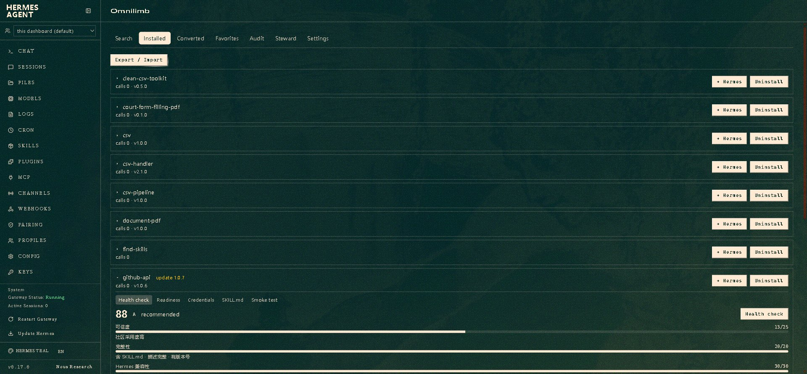

Give your Hermes agent hands & feet.
Omnilimb runs OpenClaw / ClawHub community skills, an isolated sandbox, a Playwright browser and multi-language runtimes as deterministic structured-JSON tools the agent calls directly — zero extra LLM tokens on the execution path.
pip install omnilimb
The brain has Omnilimb; you keep the brain
Hermes is the brain. Omnilimb is the deterministic execution substrate — it never calls a model itself on the execution path, and adds no extra LLM tokens. Compatible with OpenClaw & ClawHub; not affiliated with them.

What it does
A small set of structured-JSON tools your agent can call directly.
Find & install skills
Search the ClawHub / SkillHub registries and install skills by slug, git repo, or local path — with verification.
Run deterministically
Execute a skill's script entrypoint with retry and rollback — no second AI loop, no inference overhead.
Isolated sandbox
Run untrusted commands in a Docker sandbox with the network off by default and instant rollback.
Browser automation
Drive a Playwright browser through a structured action list.
Multi-language runtimes
Run quick snippets in python / node / bash / ruby / go.
Manage installed skills
List, view/edit, smoke-test, import/export and uninstall installed skills.
Discovery & health check
Browse leaderboards across markets and run a per-skill health check (体检) before you install.
Audit log
An optional local JSONL audit log of tool calls you can view in the dashboard.
Two backends
Bridge to the real openclaw / clawhub CLIs, or run a fully decoupled native Python substrate — no Node needed.

See it in action
Real screenshots from the Omnilimb dashboard tab.



Get started
Install the plugin into your Hermes home and enable it.
As a pip package:
pip install omnilimb hermes plugins enable omnilimb
Or as a directory plugin:
cp -r omnilimb ~/.hermes/plugins/omnilimb hermes plugins enable omnilimb
Omnilimb 1.0 — every tool and dashboard feature is free, under MIT. No paid tier, nothing to unlock.